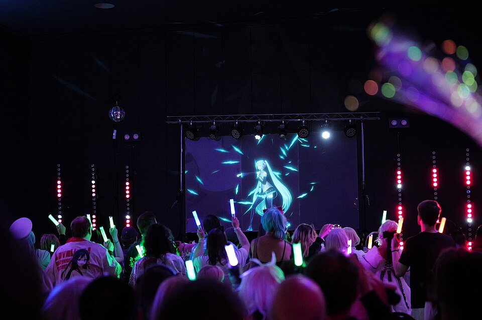
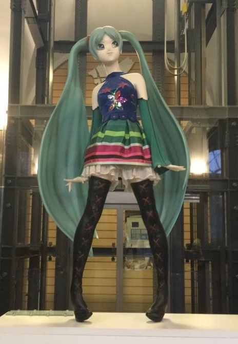
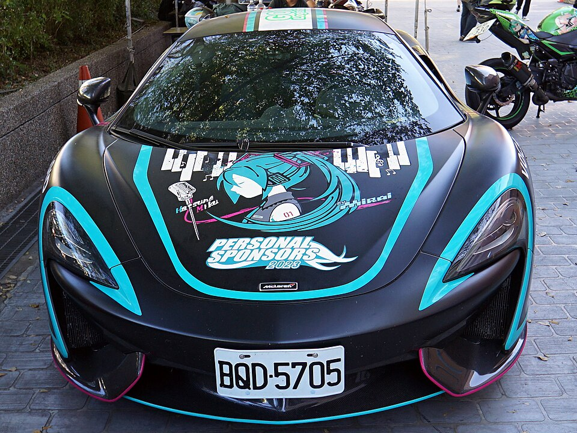

初音ミク — "the first sound of the future"
|
hatsune miku Vocaloid by Crypton Future Media birthday: August 31, 2007 age: 16 (forever) height: 158 cm voice: Saki Fujita signature item: leek Best SInger Ever |
miku is a voice synthesizer that became a worldwide idol.
she sings songs made by fans, and plays sold-out hologram concerts!
long live the teal twintails!!!!!!



ありがとう for visiting OwO | you are visitor #3939